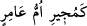

Sen, kurt yavrusuna süt veren keçiye benziyorsun.
Onun özelliği sözünde durmamaktır, o öldürülmeye lâyıktır,
O alçaktır, onun kıblesi de alçaktır.
“
” (Sırtlanı kurtaran kimse gibi) diye bir darb-ı mesel vardır. Onun
hikâyesi şöyledir: Sıcak bir günde bir grup insan ava çıktılar. Karşılarına bir sırtlan
çıktı. Avcılar sırtlanı kovaladılar. Sırtlanı bir bedevinin çadırına sığınana kadar
kovaladılar. Sırtlan zorla içeri girdi. Bedevi dışarı çıkıp avcılara “Size ne oluyor, ne
istiyorsunuz?” dedi. Avcılar: “Kovaladığımız avımızı” dediler. Bedevî: “Hayır, canım
kudret elinde olan Allâh’a yemin olsun ki şu kılıcım elimde olduğu sürece onu
alamazsınız.” dedi. Avcılar sırtlanı bırakarak dönüp gittiler. Bedevî kalkıp devesini
sağdı, sütünü sırtlana getirdi. Yine sırtlana su verdi. Sırtlan sütten ve sudan içerek
beslendi. Böylece orada bir süre yaşayıp rahat etti. Bir gün bedevî evinin içindeyken
sırtlan aniden onun üzerine sıçradı. Bedevînin karnını yarıp kanını içti ve onu öylece
bırakıp gitti. Bedevînin amca oğlu gelip adamı bu halde görünce hemen sırtlanın
yuvasına yöneldi. Fakat onu göremedi. “Allâh’a yemin olsun ki benim arkadaşım
budur.” diyerek kılıcını ve ok kılıfını aldı, ardından sırtlanı takibe koyuldu. Uzun bir
takipten sonra sırtlana yetişip onu öldürdü ve şu şiiri söyledi:
Kim lâyık olmayana iyilik yaparsa
Sırtlanı kurtaran kimsenin başına gelen onun da başına gelir.
Sırtlan aman dileyince bedevi onu himayesine aldı.
Onu bol deve sütüyle besleyip semirtti.
Sen iyilik sahibine de ki: İşte karşılığı budur,
İyilik bilmeyen nankör ve hâine iyilik yapanın
Hayâtü’l-hayevân’da böyle geçmektedir. Allah’tan yardım ve başarı dileriz.
[159]. Terğîb, IV, 43.
[160]. Bir sâ‘ takrîben 3100 gr., müdd 832 gr. dır. (Ö.N.Bilmen, Hukûk-ı İslâmiyye
ve Istılâhât-ı Fıkhiyye Kamusu, IV, 125, 126)
[161]. Buhârî, Ahzab, (33), 2.
[162]. Buhârî, Ferâiz 29, Megâzî 56; Müslim Îman 114, (63); Ebu Dâvud, Edeb 119.
[163]. Mülâane: Kadının kendisini zina ile itham eden kocasıyla yeminleşmesini
ifade eden bir fıkıh terimidir.
[164]. Deylemî, Hadis no: 4755.
[165]. Deylemî, Hadis no: 4755.
[166]. Buhârî, Rikak 26; Müslim, Fedâil 17; Tirmizî, Edeb 82.